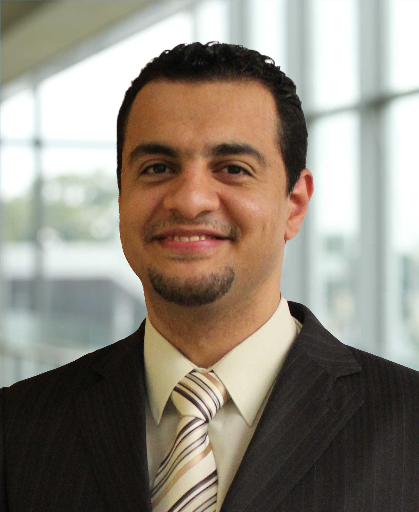

Ahmed Hamdi Sakr, PhD, PEng, SMIEEE
Assistant Professor
Department of Electrical and Computer EngineeringUniversity of Windsor
About Me
I am an assistant professor in the Department of Electrical and Computer Engineering at University of Windsor, Canada. Prior to that, I was a Principal Researcher at Toyota Motor North America R&D - InfoTech Labs. I received my Ph.D. in Electrical and Computer Engineering from University of Manitoba, Canada.
My current research interests span the broad areas of connected and autonomous vehicles, wireless and vehicular networks, edge computing, Internet of Things (IoT), signal processing, and machine learning.
Contact Me
-
Department of Electrical and Computer Engineering
University of Windsor
401 Sunset Avenue, Windsor, Ontario N9B 3P4, Canada - ahmed.sakr@uwindsor.ca
- https://ahmedsakr.com
- +1 (519) 253-3000 x5488
Prospective Students
We are currently in search of well-qualified researchers to join our lab.
More DetailsFeeling Overwhelmed?
From time to time, students face obstacles that can affect academic performance. If you experience difficulties and need help, it is important to reach out to someone.
For help addressing mental or physical health concerns on campus, contact (519) 253-3000:
- Student Health Services at ext. 7002 (http://www.uwindsor.ca/studenthealthservices/)
- Student Counselling Centre at ext. 4616 (http://www.uwindsor.ca/studentcounselling/)
- Peer Support Centre at ext. 4551
A full list of on-and off-campus resources is available at http://www.uwindsor.ca/wellness.